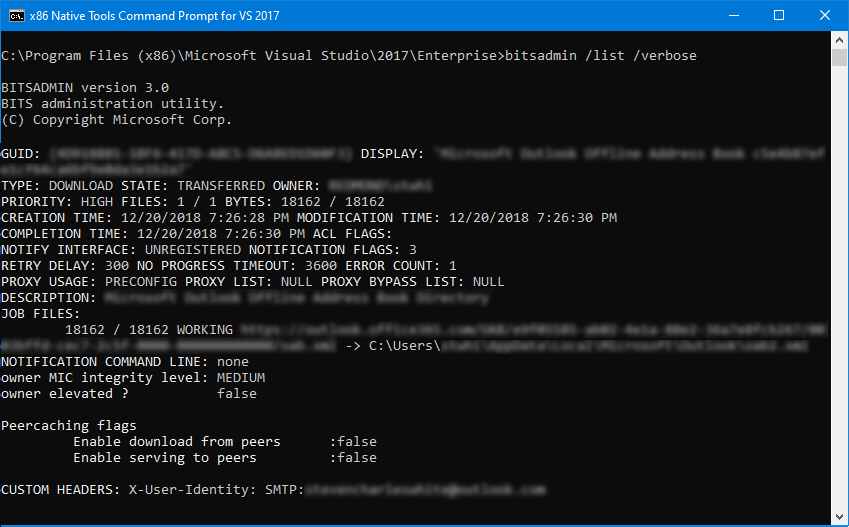

BITSAdmin is a command-line tool that you can use to create download or upload jobs and monitor their progress. For full, comprehensive documentation of the tool and all of its commands, see bitsadmin and bitsadmin examples in the Windows IT Pro Center.
For example, to list all BITS jobs, you can issue the command bitsadmin /list /verbose. Here's a screenshot of sample output for that command.
